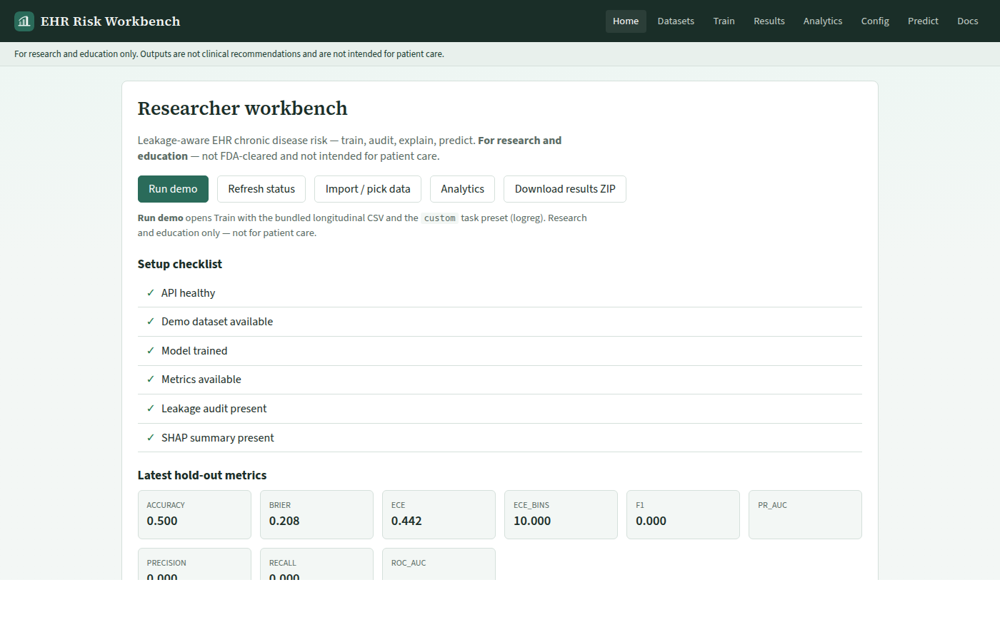
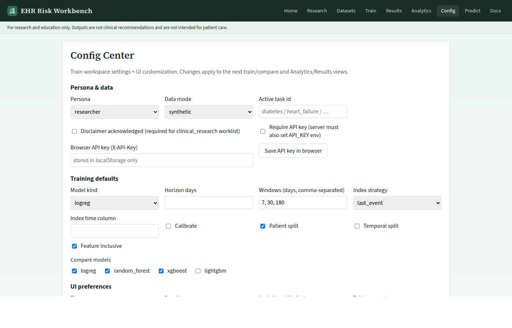
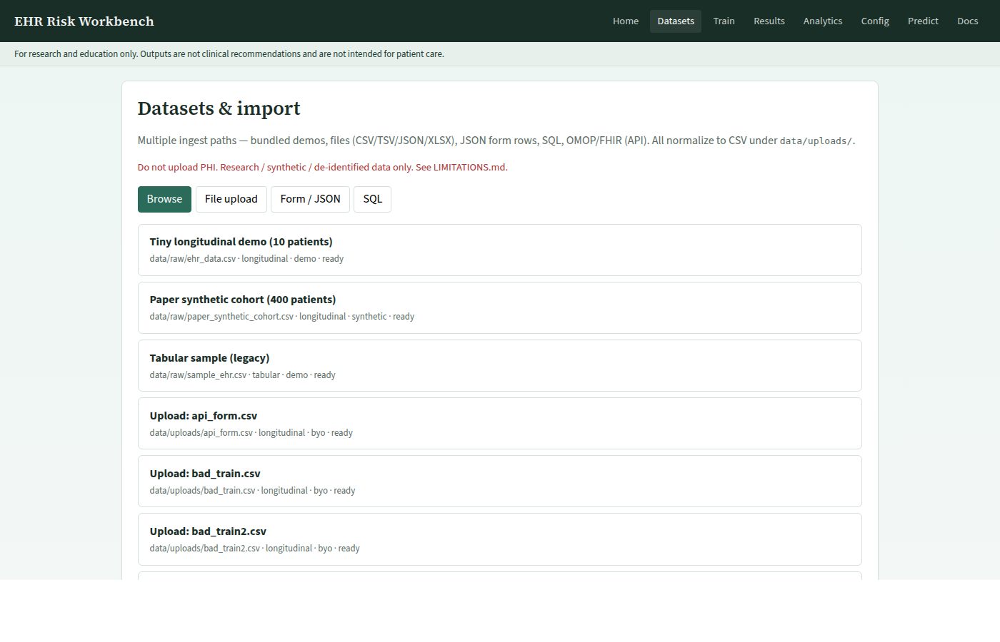
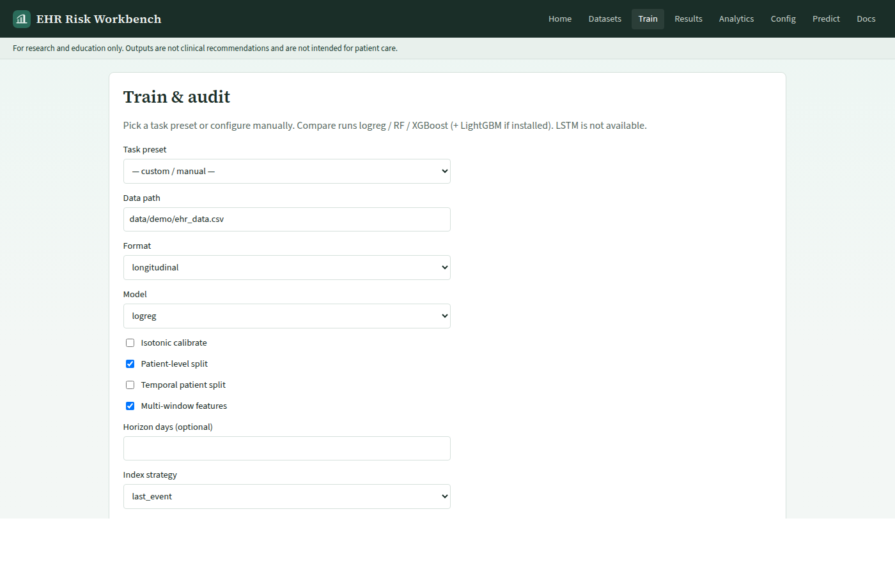
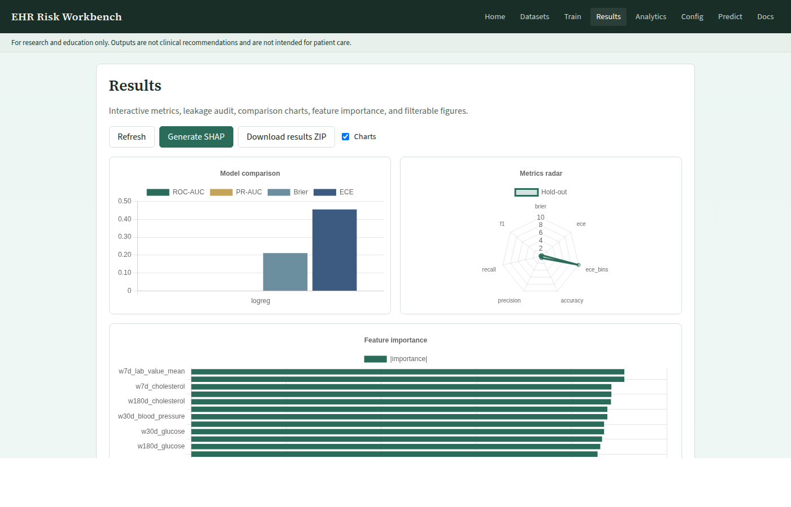
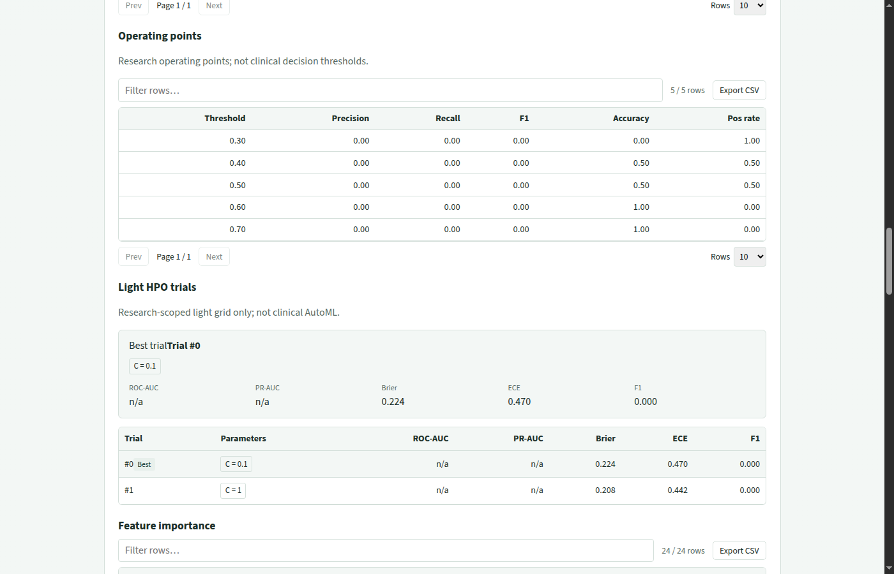
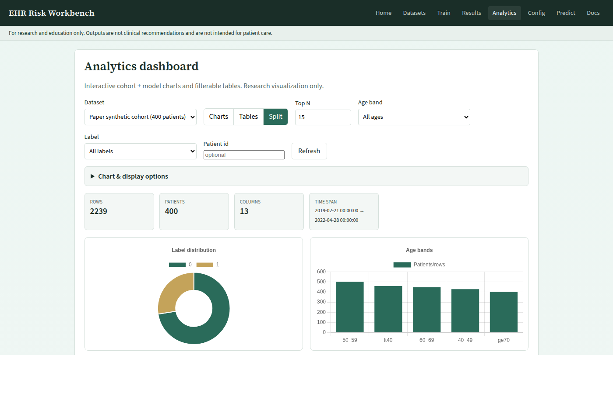
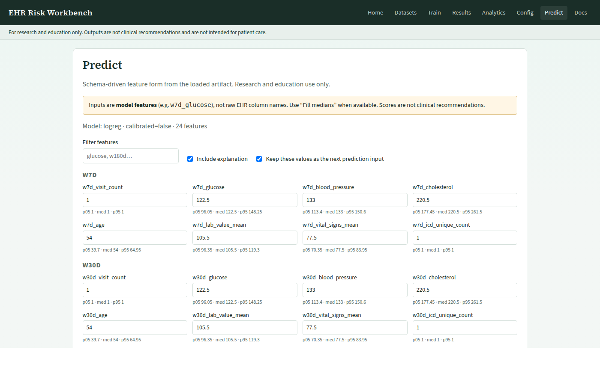
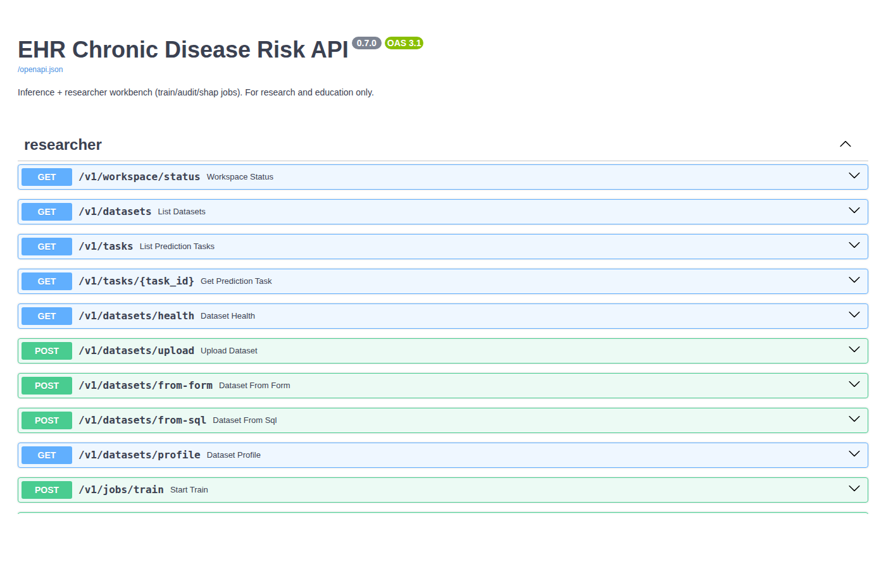
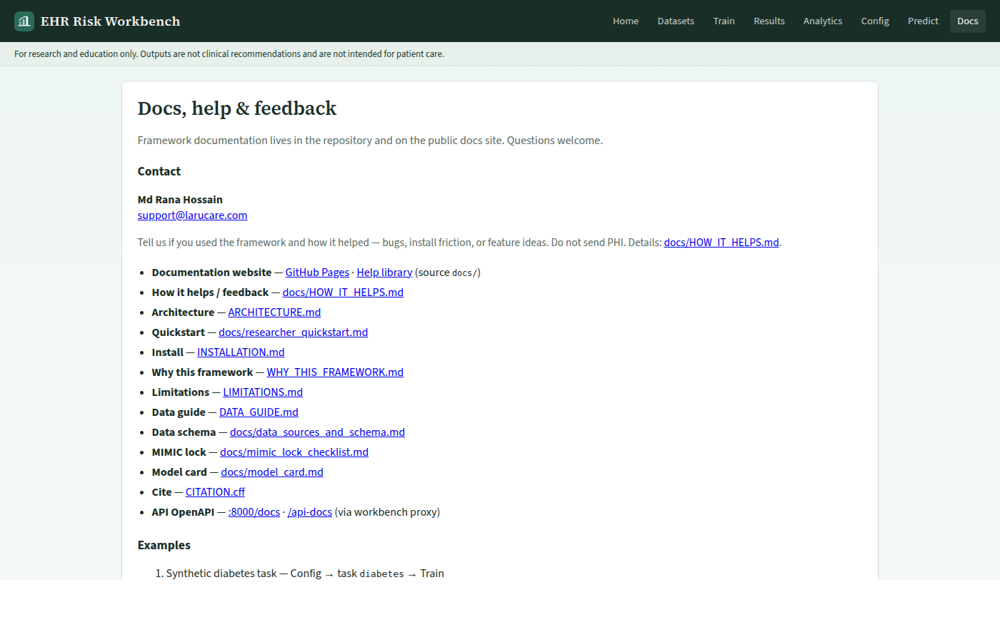

How it works — A to Z
End-to-end guide to the researcher workbench: start the stack, pick data, train with leakage-aware settings, audit, review metrics and SHAP, then predict. Screenshots use synthetic teaching data only.
A. Scope & what you get
The framework is a leakage-aware clinical ML workbench for research and teaching: task YAML (index time + horizon), temporal / patient splits, calibration (Brier / ECE), leakage audits, optional SHAP, FastAPI jobs, and an Angular UI.
- UI — Angular researcher workbench (local
:8080or live demo) - API — FastAPI train / audit / predict jobs (local
:8000or hosted API) - Data — teaching fixtures under
data/demo/(never PHI)
Deep dive: Why it matters · Features · Architecture
B. Start the stack
Local one-command start (recommended for courses and labs):
git clone https://github.com/ranasl62/ehr-chronic-disease-risk-prediction.git
cd ehr-chronic-disease-risk-prediction
docker compose up --build
# UI http://127.0.0.1:8080
# API http://127.0.0.1:8000/docsOr open the hosted workbench without installing anything: https://ehr-risk-framework.larucare.com/
Also: Quickstart · Docker Hub images
C. Home — researcher checklist
Route /. After the API is up, Home answers: is the API healthy, is demo data present,
is model.pkl trained, and which trust artifacts (metrics, leakage audit, SHAP) exist?

- Open the workbench URL and wait for status to leave “Checking workspace…”.
- Confirm green checks for API, demo data, and model (first boot may train via
prepare). - Use Run demo to jump into Train with the bundled longitudinal CSV, or Import / pick data for Datasets.
- Failed items show a Fix link to Datasets, Train, or Results.
Detail page: Home UI tour
D. Config Center
Route /config. Set research persona defaults (task, model family, windows), optional API key,
and UI theme / density before a serious train loop.

- Choose a task preset (e.g. diabetes / custom) and model options to compare later.
- Set window days and split preferences that Train will inherit.
- If the API requires
API_KEY, paste it here so jobs sendX-API-Key. - Save — values persist in workspace config for the session / volume.
Detail page: Config UI tour
E. Datasets & health
Route /datasets. Browse bundled demos under data/demo/, upload BYO CSV to
data/uploads/, map columns, and run dataset health before Train.

- Leave Show bundled demo datasets on for teaching fixtures.
- Select
ehr_data.csv(tiny longitudinal) or a larger synthetic cohort. - Run Dataset health — fix schema / integrity issues before training.
- For your own CSV: File upload → map columns → health → Continue to train.
Detail: Datasets UI · Data guide
F. Train & compare
Route /train. Pick format (longitudinal vs tabular), task, model(s), calibration,
and optional multi-model compare. Training writes model.pkl, evaluation reports, and run metadata.

- Confirm data path (demo longitudinal CSV is the default teaching path).
- Select model(s): logreg, random forest, xgboost, lightgbm (as available).
- Enable isotonic calibration when you care about probability quality (Brier / ECE).
- Start training — wait for job completion, then open Results.
Detail: Train UI · Fine-tuning
G. Leakage audit
From Train (or Results jobs), run the leakage audit against the trained artifact. It checks post-index features and split integrity so inflated AUROCs from future information are caught early.
- After a successful train, start the leakage-audit job from the Train / Results job panel.
- Wait until Home shows Leakage audit present.
- Read the audit JSON / report in Results or the reports ZIP — treat failures as blockers for “honest” metrics.
Concept guide: Prevent data leakage in clinical AI · Temporal diagrams
H. Results, light HPO & SHAP
Route /results. Review hold-out metrics, calibration plots, optional light HPO trials,
fairness jobs, SHAP summaries, and downloadable figures.


- Open Results after train — check ROC / PR when available, Brier, ECE, accuracy family metrics.
- Optionally run light HPO — inspect best trial (not clinical AutoML).
- Generate SHAP when supported; Home checklist updates when the summary exists.
- Promote a named run when you want that artifact as the active model.
Detail: Results UI
I. Analytics
Route /analytics. Cohort charts and tables for the selected dataset / split —
useful for teaching EDA before or after training.

- Select the dataset you trained on (or another demo).
- Explore filters and charts — confirm class balance and feature distributions look sane.
- Use findings to adjust windows / task config, then retrain if needed.
Detail: Analytics UI
J. Predict & explain
Route /predict. Submit schema-aligned features to POST /v1/predict,
view risk output, and inspect SHAP / vs-median explanations when available.

- Confirm a trained model is active (Home: Model trained).
- Fill the feature form (or paste JSON aligned to the training schema).
- Submit — read probability / label as research output only.
- Review local explanations; do not use them for clinical decisions.
Detail: Predict UI · API overview
K. OpenAPI & in-app Docs
Interactive Swagger lives at the API /docs (local :8000/docs or
hosted API docs).
The workbench /docs route links to this documentation website (not raw GitHub Markdown).


Detail: OpenAPI tour · In-app Docs tour · Help library
L. Download results ZIP
From Home or Results, download the methods pack: metrics JSON, figures, audit artifacts, and run metadata for reproducibility write-ups.
- Complete at least one train (+ optional audit / SHAP).
- Click Download results ZIP (or hit
/v1/reports/download.zipon the API). - Archive the ZIP with your paper / homework submission — still no PHI.
M. Hosted / split deploy
The public demo UI and API can run on separate hosts. The web image bakes
API_ENDPOINT=https://ehr-api.larucare.com at build time; the API allows the UI origin via
CORS_ORIGINS=https://ehr-risk-framework.larucare.com.
- Local Compose: leave
API_ENDPOINTempty — nginx proxies/v1toapi. - Split deploy: set both env vars as above; same-origin
/v1on the UI host alone will not work.
N. Limits & next steps
Synthetic and teaching metrics are not clinical performance. Prefer credentialed hospital systems for care; use this stack for methods teaching and reproducible research software.
- Limitations & model card
- Workbench hub (every screen as a short page)
- Tutorial: build a risk model
- Cite & feedback — support@larucare.com